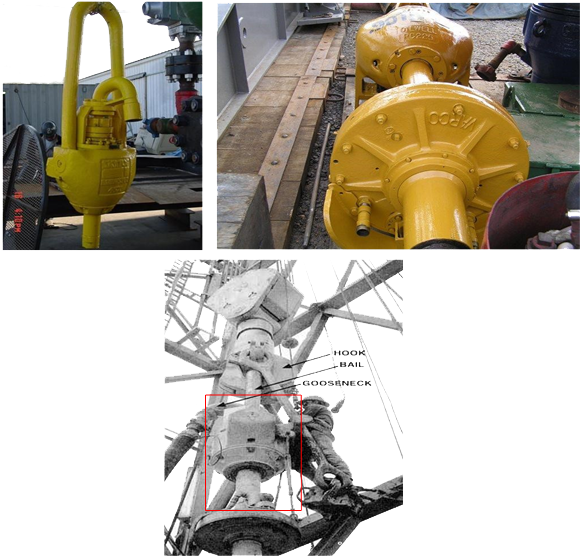
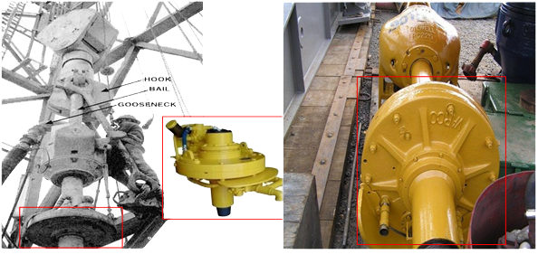
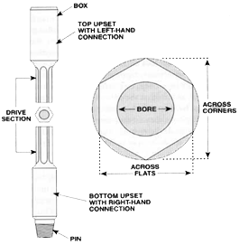
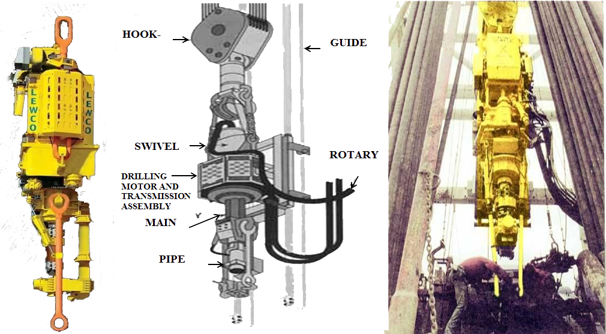
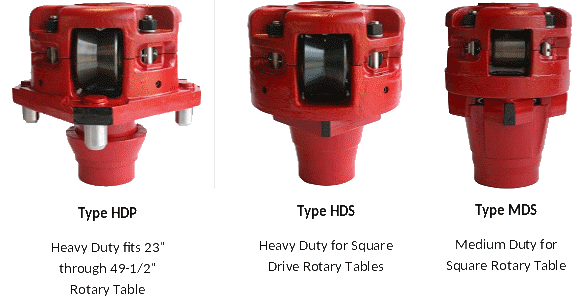
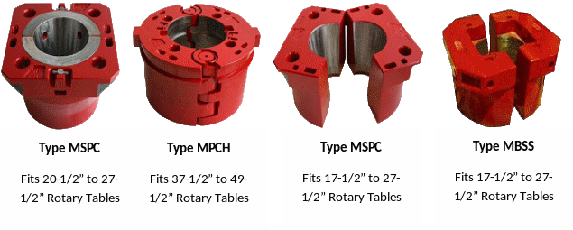
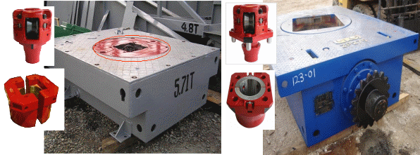
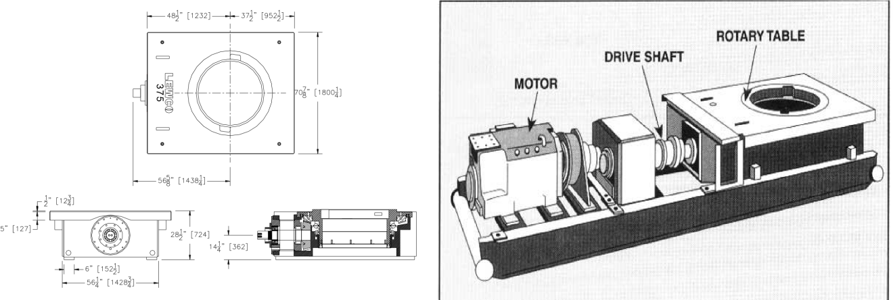

The Rig Equipment responsible for rotating the drill string. Consist of the following :
Swivel
The rotary tool that is hung from the hook of the traveling block to suspend the drill string and permit it to rotate freely.
It also provides connection for the rotary hose and provide passageway for the flow of drilling fluid into the drill-stem.

Kelly Spinner
A pneumatically controlled device mounted below the Swivel that when actuated causes the Kelly to spin.

Kelly or Top Drive
The heavy steel member, usually four or six-sided that is suspended from the Swivel through the Rotary Table and connected to the topmost joint of drill pipe to turn the drill stem as the rotary table turns.
It has a bored passageway that permits fluid to be circulated into the drill stem and up the annulus or vise versa.

Top Drive
A hydraulically powered device located below the Swivel that when actuated allows the drill-stem to spin and proceed in drilling.

Kelly Bushing
A device that when fitted to master bushing transmits torque to the Kelly and simultaneously permits vertical movement of the Kelly to make hole.

Master Bushing
A device that fits into the rotary table to accommodate the slips and drive the Kelly Bushing so that the rotating motion of the rotary table can be transmitted to the Kelly.

Rotary Table
Equipment used to turn the drill stem and support the drilling assembly.
It has a beveled gear arrangement to create the rotational motion and opening into which bushings are fitted to drive and support the drilling assembly.

